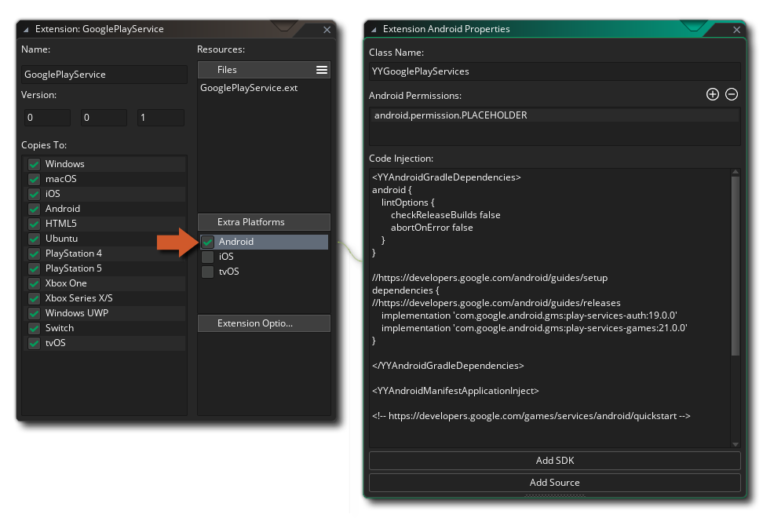

要为extension 创建一个Android ，你必须分两部分进行。第一部分是添加extension 本身，以及所需的文件，第二部分是创建extension 所需的函数和宏/常量。
函数和常量是使用占位符 文件来添加的，所以你要添加一个占位符，然后按照上一节的解释来定义函数和宏。要添加其余的文件，你需要首先在编辑器的额外平台部分勾选Android 的复选框，这将打开扩展的Android 属性。

在这里，你可以提供以下细节。
任何输入到 "代码注入 "窗口的代码都需要被分成不同的XML组，如上面的截图所示。你为一个组使用的XML标签将决定代码被注入你的应用程序的位置。
你可以使用以下语法来创建代码注入组。
<YYTagName>
// Code to inject
</YYTagName>
以下标签可用于Android 平台。
YYAndroidTopLevelGradle
YYAndroidTopLevelGradleBuildscript
YYAndroidTopLevelGradleBuildscriptRepositories
YYAndroidTopLevelGradleBuildscriptDependencies
YYAndroidTopLevelGradleAllprojects
YYAndroidTopLevelGradleAllprojectsRepositories
YYAndroidTopLevelGradleEnd
YYAndroidGradle
YYAndroidGradleEnd
YYAndroidGradleAndroid
YYAndroidGradleDependencies
YYAndroidGradleProperties
YYAndroidBuildTypesRelease
YYAndroidManifestAttributes
YYAndroidManifestApplicationAttributes
YYAndroidManifestActivityAttributes
YYAndroidManifestActivityInject
YYAndroidManifestApplicationInject
YYAndroidStringValuesInjection
YYAndroidLayout
YYAndroidProguard
runtime ，代码被注入的位置将取决于标签的类型。
| 标签类型 | 注射路径 |
|---|---|
| 顶层的Gradle | {RUNTIME}/android/runner/RootFiles/build.gradle |
| 模块级Gradle | {RUNTIME}/android/runner/ProjectFiles/build.gradle |
| 安卓指令 | {RUNTIME}android\runner\ProjectFiles\src\main\AndroidManifest.xml |
| 弦乐 | {RUNTIME}android/runner/ProjectFiles/src/main/res/values/strings.xml |
| 布局 | {RUNTIME}android\runner\ProjectFiles\src\main\reslayout\main.xml |
| ProGuard | {RUNTIME}\android\runner\ProjectFiles\proguard-rules.pro |
注意这些paths 仅用于 VM；对于 YYC，注入的代码将进入 {RUNTIME}\yyc\ 目录，那里的paths 可能与 VM 的 不相等。
一旦你设置正确，你将需要添加你的extension 包工作所需的文件。要做到这一点，你需要点击底部的按钮，添加SDK或添加源代码，然后浏览你想要添加的文件。添加的文件将和你的extension 一起存储在 AndroidSource 目录中。你可以在任何时候通过右击 ，选择在资源管理器中打开这个位置extension 。
关于你为extensions 创建本地Android ，请看源码实例。